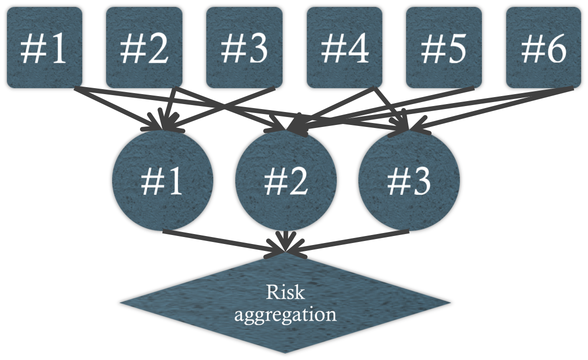

Introduction
A process by which the current values of the portfolio positions are replaced by exposures on the risk factors
Mapping for Risk Measurement

Mapping Fixed-Income Portfolios
- Primary mapping techniques:
- Principal mapping
- Duration mapping
- Cash-flow mapping
Mapping Linear Derivatives
- Forward contracts
- ft = Ste-yτ-Ke-rτ = Fte-rτ-Ke-rτ = (Ft-K)e-rτ
- Long forward contract = long foreign currency spot + long foreign currency bill + short US dollar bill
- Commodity forwards
- Convenience yield - benefit from holding the cash product
- Forward rate agreements
- (1+R2τ2=(1+R1τ1)[1+F1,2(τ2-τ1)]
- Interest rate swaps
Mapping Options
- Black-Scholes: c = Se-r*τN(d1)-Ke-rτN(d2)
- d1 = [ln(Se-r*τ/Ke-rτ)]/(σ√τ) + (σ√τ)/2
- d2 = d1 - σ√τ